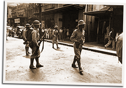

|
j
a v a s c r i p t |
December 12, 1941
The Bulletin headlines were about Lingayen: “USAFFE HALTS INVASION ... Mopping up operations in Lingayen area now in progress.” So cheerful was the communiqué, it even reported that “American scout planes forced a group of Japanese bombers back.” Even the financial section was upbeat. Belying all this was news of a new Japanese landing near Legaspi, the southern tip of Luzon. The wet weather didn’t even stop the airfields of Iba and Clark from getting pasted again, or Batangas from getting it twice.

Roundup
Lt. Col. José Guido rounded up Germans and Italians yesterday to join the 1,500 Japanese males under “protective custody.” The latter have been barred from communicating with the outside. In other news, Stimson congratulated MacArthur on the sinking of the Haruna†. Admiral Hart, who observed the obliteration of his naval base from atop the Marsman’s Building, described the Japanese bombing technique over Cavite as of a “high order.... All considered, the Japs were quite successful.” Drove Mrs. Cartagena and daughters home after a two-night stay with us. Traffic was a mess as military convoys got priority. After much scrambling and daredevil antics, I finally broke through to the Metropolitan Building to pick up Dad and Joe, only to get stuck in traffic again. I didn’t reach the office till 1530 — by bike — aggravating an old toe infection in the process. After the recent bombings, the Red Cross evacuated 7,000 “non-essentials” from Fort Santiago and the Walled City. According to a reporter, the place looked like a “ghost town” yesterday afternoon. We got bawled out for a blackout violation tonight when our maid, Irene, flashed the light intermittently while ironing in the back porch. And speaking of laundry, ours is missing with our lavandera from Cavite. † False. |